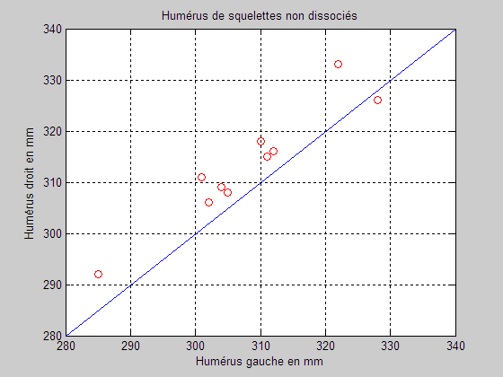
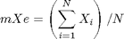
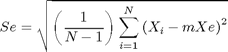

À la suite de fouilles archéologiques effectuées en 1936 en Angleterre, on a mesuré la longueur de l'humérus gauche et de l'humérus droit sur des squelettes humains non dissociés de sexe féminin. Effectuer des calculs statistiques sur les données.
Débuter par un examen des données et des commentaires contenus dans le fichier Humerus.txt.
Étape 1 – lecture
Lire le fichier Humerus.txt afin de constituer la matrice H.
Étape 2 – graphique de données

Étape 3 – quotient D divisé par G
Pour chacun des 10 squelettes, calculer le quotient X.
X = longueur de l'humérus droit, divisée par
longueur de l'humérus gaucheAfficher les résultats sur deux lignes avec 5 chiffres après le point décimal.
Étape 4 – moyenne et écart-type
Utiliser la fonction mean pour calculer la moyenne mXe des valeurs de X.
>> doc mean % moyenne
La mesure de dispersion des données la plus utilisée est l'écart-type Se. Utiliser la fonction std pour calculer l'écart-type Se des valeurs de X.
>> doc std % écart-type
Étape 5 – moyenne et écart-type (reprise)
Reprendre les calculs précédents en utilisant la programmation traditionnelle, pas de vectorisation, ni de fonction sum, etc.
Calculer la moyenne arithmétique mXe des quotients X des N squelettes de l'échantillon selon la formule suivante :

Calculer l'écart-type des quotients X de l'échantillon selon la formule suivante :
